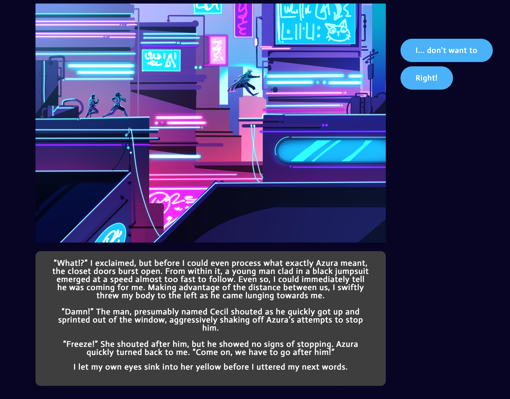

Eternal Fall was a web based interactive story for SFU’s IAT 313 Narrative Media course. My group was tasked with making a multilinear narrative with 3 or more different endings using any medium we saw fit. We chose to use a web based platform as we felt it could best convey our theme and idea of a story that loops on itself.
To start production, my group first had to decide on what our story was. After some deliberation, we decided on a story about time travel, as we thought it would be interesting to have the most common ending of the story loop back to the beginning, and have two rarer endings where the protagonist could exit the time loop.
Once we decided on the general direction, I coordinated with the artist to make a decision tree containing the main story beats and how they connected to each other, as well as the locations we would special stills of the characters.
After finalizing the decision tree, I began writing the story as it would be displayed in the product. Originally we had planned to take a more visual novel approach, with character sprites appearing as their dialogue appeared in text boxes underneath. However, we realized this approach would put too much strain on our artist, so we switched to a style closer to that of an interactive web novel. This meant that I had to switch my writing style from a dialogue heavy one, to one the included a fair amount of descriptors. While this did pose a bit of challenge, I managed to overcome it through further coordination with the artist and making sure enough was conveyed between her art and my writing.
After proofreading and iterating my writing further, I handed off my writing to my group’s designers for it to be implemented into the website format. During the implementation, I discussed with the designers about formatting, and making sure the buttons corresponded with the right words, as well as the right routes in the decision tree.
In the end, my group was able to create a fully functioning web novel complete with music. This project was the first time I wrote a multilinear narrative, and the volume of the work proved to be challenging but allowed me to hone my skills further. Dedicating my self to the writer role also allowed to me to learn how to coordinate with group members of other roles to create a product that better conveyed our message.